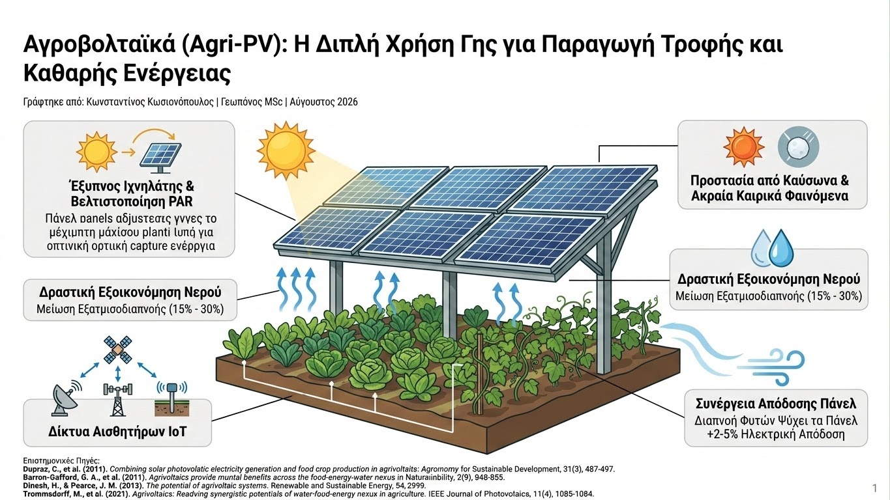

Ο ανταγωνισμός για τη χρήση της γης ανάμεσα στην παραγωγή τροφίμων και την εγκατάσταση ανανεώσιμων πηγών ενέργειας αποτελεί ένα από τα κρισιμότερα διλήμματα της σύγχρονης εποχής. Η εγκατάσταση παραδοσιακών φωτοβολταϊκών πάρκων συχνά δεσμεύει παραγωγικές αγροτικές εκτάσεις. Η απάντηση της αγροτεχνολογίας σε αυτόν τον συμβιβασμό είναι τα Αγροβολταϊκά Συστήματα (Agrivoltaics / Agri-PV), μια καινοτόμος προσέγγιση που συνδυάζει την πρωτογενή παραγωγή και την παραγωγή ηλιακής ενέργειας στο ίδιο ακριβώς αγροτεμάχιο.
Από βιολογική και φυσιολογική σκοπιά, τα περισσότερα καλλιεργούμενα φυτά διαθέτουν ένα σημείο φωτοκορεσμού (Light Saturation Point) πέρα από το οποίο η επιπλέον ηλιακή ακτινοβολία δεν αξιοποιείται για τη φωτοσύνθεση. Αντιθέτως, η υπερβολική ακτινοβολία προκαλεί φωτο-αναστολή (photoinhibition), υπερθέρμανση των ιστών και απότομη αύξηση της εξατμισοδιαπνοής. Η υπερυψωμένη τοποθέτηση φωτοβολταϊκών πλαισίων πάνω από την καλλιέργεια δημιουργεί ένα ευνοϊκότερο μικροκλίμα, μειώνοντας τη θερμοκρασία του φυλλώματος κατά τις μεσημβρινές ώρες και προστατεύοντας τους καρπούς από ηλιακά εγκαύματα.

Τα σύγχρονα δυναμικά συστήματα Agri-PV ενσωματώνουν έξυπνους ιχνηλάτες (solar trackers) και αλγορίθμους βελτιστοποίησης PAR (Photosynthetically Active Radiation). Μέσω δικτύων αισθητήρων IoT και μετεωρολογικών προγνώσεων, τα πάνελ προσαρμόζουν αυτόματα τη γωνία κλίσης τους: επιτρέπουν τη μέγιστη διέλευση φωτός όταν το φυτό το χρειάζεται για τη βλάστηση και παρέχουν σκίαση κατά τις περιόδους ακραίου καύσωνα ή κινδύνου χαλαζόπτωσης.
Τα επιστημονικά τεκμηριωμένα οφέλη των αγροβολταϊκών συστημάτων περιλαμβάνουν:
- Δραστική Εξοικονόμηση Νερού: Η μείωση της άμεσης ηλιακής ακτινοβολίας στο έδαφος και τα φυτά περιορίζει την εξατμισοδιαπνοή κατά 15% έως 30%, αυξάνοντας την αποδοτικότητα χρήσης νερού (Water Use Efficiency - WUE).
- Συνέργεια Απόδοσης Πάνελ (Panel Cooling): Η διαπνοή των φυτών κάτω από τα πλαίσια ψύχει το περιβάλλον, αποτρέποντας την υπερθέρμανση των φωτοβολταϊκών κυψελών και αυξάνοντας την ηλεκτρική τους απόδοση κατά 2% έως 5%.
- Προστασία από Ακραία Καιρικά Φαινόμενα: Η φυσική κάλυψη λειτουργεί ως αντιχαλαζική και αντιπαγετική προστασία, μειώνοντας την ευπάθεια ευαίσθητων καλλιεργειών (οπωρώνες, αμπέλια, κηπευτικά).
Τα Αγροβολταϊκά αποδεικνύουν ότι η ενεργειακή μετάβαση και η επισιτιστική ασφάλεια μπορούν να λειτουργήσουν συμπληρωματικά. Μέσω της ακριβούς ψηφιακής διαχείρισης του φωτός και του μικροκλίματος, ο σύγχρονος γεωπόνος εξασφαλίζει τη βιωσιμότητα της παραγωγής, δημιουργώντας εκμεταλλεύσεις ανθεκτικές στην κλιματική αλλαγή και ενεργειακά αυτόνομες.